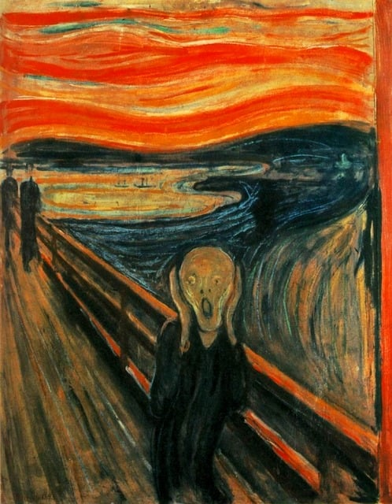
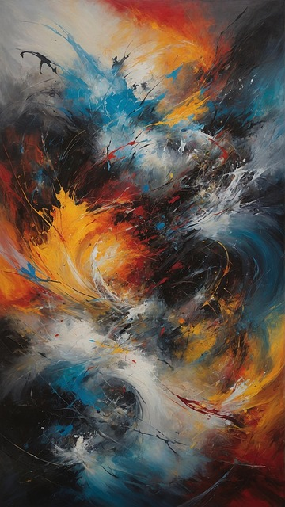
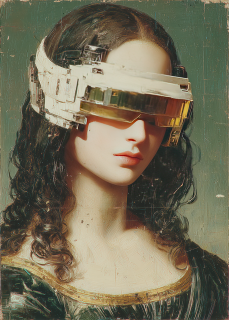

Mest kjente maleri av Edvard Munch

Skrik av Edvard Munch
Verdens mest kjente bilder. Skrik finnes i flere versjoner. Den første versjonen er fra 1893, mens dette maleriet er fra 1910.
Se mer av Edvard Munch

Verdens mest kjente bilder. Skrik finnes i flere versjoner. Den første versjonen er fra 1893, mens dette maleriet er fra 1910.
Se mer av Edvard Munch
Du kan komme og se mye av både moderne og tradisjonelle maleri
Se har